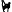

Gjabakkahellir
Useful Information
| Location: |
Thingvellir National Park.
(64.2198154, -20.9976092) (64.2196624, -20.9916931) |
| Open: |
no restrictions. [2020] |
| Fee: |
free. [2020] |
| Classification: |
 lava tube lava tube
|
| Light: | bring torch |
| Dimension: | L=360 m. |
| Guided tours: | available by various operators |
| Photography: | allowed |
| Accessibility: | no |
| Bibliography: | |
| Address: | Gjabakkahellir. |
| As far as we know this information was accurate when it was published (see years in brackets), but may have changed since then. Please check rates and details directly with the companies in question if you need more recent info. |
|
History
| 1907 | discovered by workers preparing a road between Thingvellir and Geysir. |
Description
Gjabakkahellir (Blueberry Cave) is a lava tube which was formed 9000 years ago. It was discovered by workers in 1907 when they were constructing a road between Thingvellir and Geysir. The cave is easy to reach, its only 50 m walk from the road, and it is a through-cave which crosses the road underground. There are cave trekking operators offering tours into the cave, but it is also possible to visit it without a guide. If you do so please follow the rules for save Caving. The cave floor is covered with large rocks that have fallen from the cave ceiling and walking can be treacherous at times. It requires good sturdy shoes and surefootedness, a bit of climbing and stooping is also necessary.
The rocks in the cave have fallen from the cave ceiling in the cooling phase of lava field. Incredible rock formations in various colors, and stalactites of all shapes and sizes were formed by the cooling lava.
 Search Google for "Gjabakkahellir"
Search Google for "Gjabakkahellir" Google Earth Placemark
Google Earth Placemark OpenStreetMap
OpenStreetMap Gjabakkahellir (visited: 25-JUL-2020)
Gjabakkahellir (visited: 25-JUL-2020) Index
Index Topics
Topics Hierarchical
Hierarchical Countries
Countries Maps
Maps Search
Search